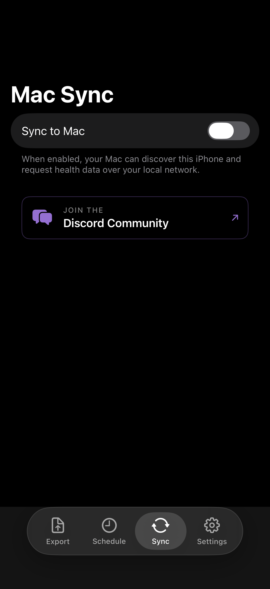

Mac Sync
Use the macOS companion app as a local destination for iPhone-configured exports. Your iPhone reads HealthKit, applies your selected settings, then sends the export job to the Mac over nearby-device connectivity.

What it is
Mac Sync lets your Mac receive exports without becoming a HealthKit reader. The iPhone remains the source of truth for Apple Health data, builds the export using your selected metrics, formats, date range, filenames, and write mode, then sends the job to the Mac. The Mac writes the received files into the destination folder you chose.
How to enable
- Install and open the macOS app.
- On Mac, choose a destination folder so Health.md has write access.
- On iPhone, open the Sync tab and enable Mac connectivity.
- Return to the iPhone Export tab, choose Connected Mac, configure the export, and tap Export.
What's transferred
- The exported files or export job payload for the date range you selected on iPhone
- Your metric selection, formats, filenames, folder structure, and write mode
- Status and readiness messages from the Mac destination
No account or remote health-data cloud is required. Both devices need local-network access and must be able to discover each other.
When to use it
Both devices must be nearby and allowed to use local networking. Cellular-only iPhones cannot discover a Mac destination. If readiness says the Mac needs attention, reopen the Mac app and reselect the destination folder.